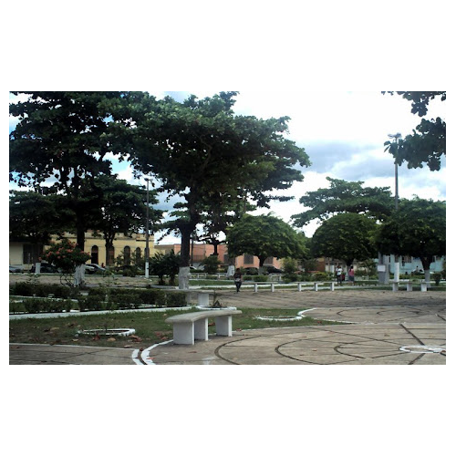

Réveillon a festa de ano novo
Venha para esse momento de celebração de ano novo com as melhores atrações da baixada Maranhense como a banda miragem e muito mais
Local: Praça Sarney
Data: 31 de dezembro
Horário: A partir das 21:00 horas